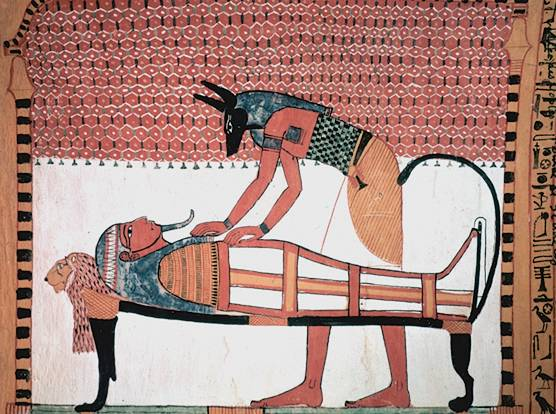
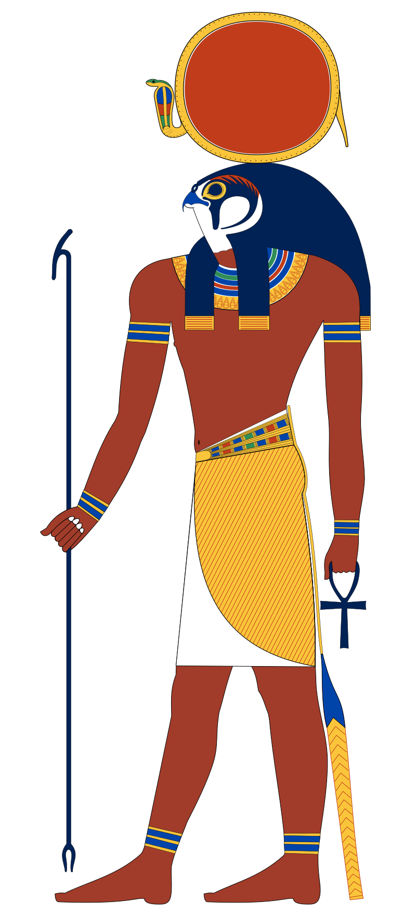

Egyiptomi Istenek
Anubisz
 Az egyiptomiak hite szerint a halál után az ember a holtak kamrájába kerül. Anubisz az elhunyt túlvilági megítélésénél mint bíró volt jelen, így az istenek bírálójának is nevezték. (A sakál hieroglif jele bírót is jelentett.) Itt Anubisz egy mérlegre helyezi a halott szívét, míg a mérleg másik serpenyőjébe Maatnak, az igazság istennőjének tollát teszi. Ha a szív nehezebbnek bizonyul, mint a toll, akkor Ammut felfalja a szívet. Anubisz kultusza Kaszában (görögül Künopolisz, azaz 'kutyaváros'), egy 17. nomoszba tartozó városban keletkezett, de nagyon korán elterjedt Egyiptomban. Az Óbirodalom időszakában Anubiszt a holtak istenének tartották, fő jelzői: Henti-Imentiu, vagyis a Nyugatiak (elhunytak) élén álló, Ra-Szetau (a holtak országának) ura, az istenek palotájában élen álló.
Ré
 Ré (régebben Rá alakban írták át) ókori egyiptomi napisten, Egyiptom történelmének egyik legjelentősebb istene. Története során több más istennel is egybeolvadt, köztük Hórusszal, Atummal és Ámonnal. Hatásköre kiterjedt az égre, a földre és az alvilágra is, több teremtésmítoszban is fontos szerepet tölt be, és a király isteni atyjának is tekintették. Kultuszának első kimutatható jele a II. dinasztia idejéből származik, ahol egy fáraó neve Raneb („A Nap az úr”) volt. A IV. dinasztia idejében az isten hatalma már elérte tetőpontját, a fáraók hivatalos titulatúrájába Hafrétól kezdve bekerült a „Ré fia” cím, és a piramisok, melyek közül a leghíresebbek ekkor épültek, szintén a napkultusszal állnak kapcsolatban. Az V. dinasztia idejére Ré tulajdonképpen az állam hivatalos istenévé vált, az ekkori királyi temetkezések elengedhetetlen kellékei, a naptemplomok talán a héliopoliszi nagy templom mintájára készültek (bár maga az óbirodalmi nagy templom nem került elő).